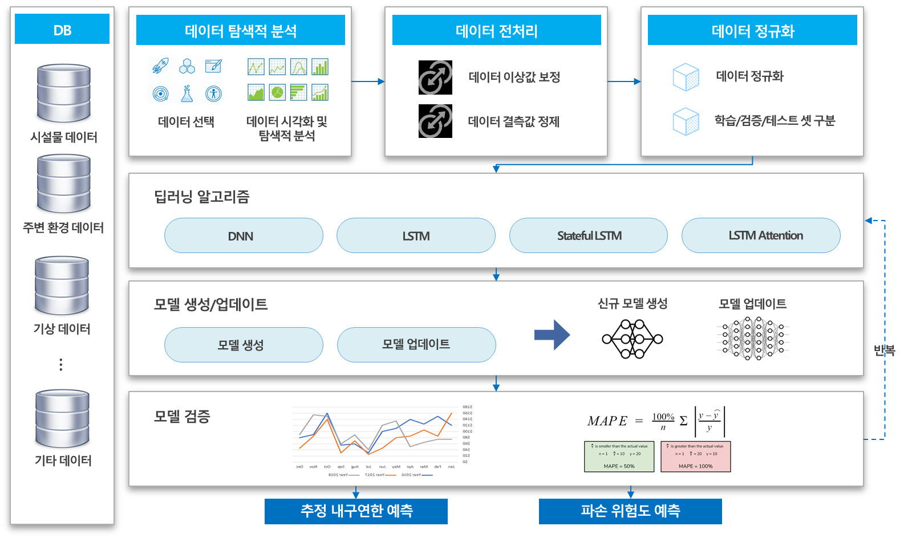
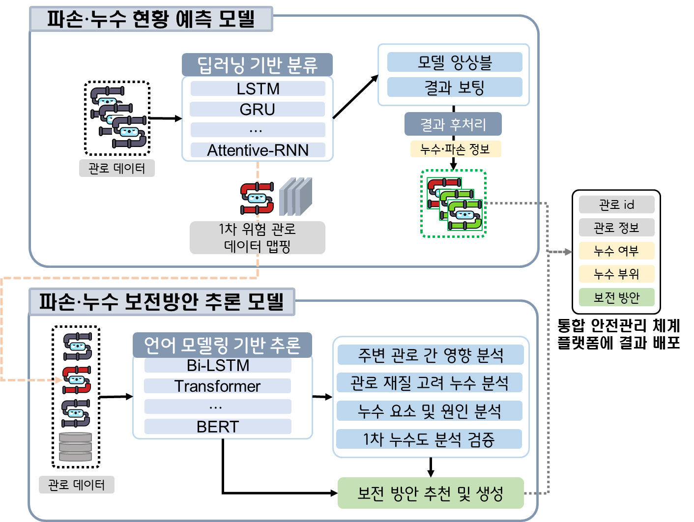
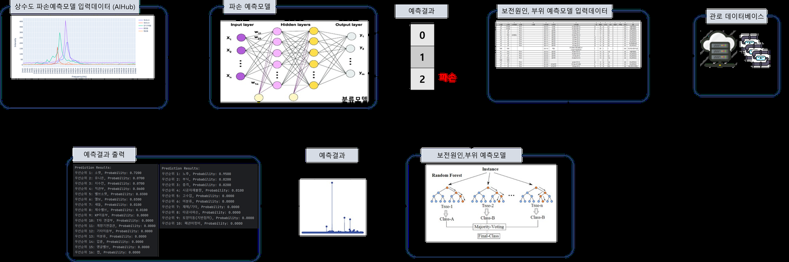

보이지 않는 관로를 예측하다
도시의 발밑에는 수십 년 묵은 상수도 관로가 지나간다. 언제 어디서 터질지 모르는 이 지하의 시간표를, 우리는 불규칙한 시계열 데이터로부터 읽어내려 했다. 그리고 ‘언제 터질까’를 넘어 ‘무엇을 어떻게 고칠까’까지, 예측과 처방을 하나의 시스템으로 이었다.

발밑을 흐르는 시간표
도시의 상수도 관로는 좀처럼 눈에 띄지 않는다. 우리가 그 존재를 실감하는 순간은 대개 나쁜 소식과 함께 온다. 도로 한복판이 주저앉거나, 멀쩡하던 골목이 하룻밤 새 물바다가 되거나, 수돗물에서 흙냄새가 날 때. 관로는 조용히 늙어 가고, 그 노화는 어느 임계점을 넘는 순간 파손과 누수라는 형태로 지상에 튀어나온다. 문제는 그 임계점이 관마다, 구간마다, 매설 연도와 토질과 수압에 따라 제각각이라는 데 있다.
전통적인 접근은 사후 대응이었다. 터지면 고치고, 새면 막았다. 하지만 지하 인프라는 사후 대응의 비용이 유난히 크다. 굴착 자체가 도시 기능을 마비시키고, 2차 사고로 번지며, 복구에 막대한 예산이 든다. 그래서 우리가 던진 질문은 방향을 뒤집는 것이었다. 터지기 전에 알 수는 없을까. 관로가 남기는 데이터의 미세한 진동으로부터, 아직 오지 않은 사고의 시간표를 앞당겨 읽을 수는 없을까.
이 질문은 곧 대전시와 한국수자원공사, 그리고 에이에스티홀딩스가 함께한 국가 R&D 과제(2024.01–2026.12, 사업비 약 16억 원)로 구체화되었다. 필자는 이 과제의 AI 예측·추론 파트를 맡았다. ‘불규칙 시계열 상수도 관로 파손·누수 예측’이라는 과제명 자체가, 앞으로 마주할 어려움을 이미 정직하게 예고하고 있었다.
Chapter 2. 불규칙 시계열이라는 난제깨끗한 데이터는 어디에도 없었다
시계열 예측을 다뤄 본 사람이라면 누구나 안다. 교과서의 시계열은 등간격으로 가지런히 늘어서 있지만, 현실의 시계열은 그렇지 않다. 상수도 관로 데이터는 그 ‘그렇지 않음’의 극단에 가까웠다. 센서는 어떤 날은 분 단위로, 어떤 날은 하루에 한 번 값을 뱉었다. 통신 장애로 몇 시간이 통째로 비었고, 교정되지 않은 계측기는 물리적으로 불가능한 이상치를 남겼다. 우리가 다룬 데이터의 상당 부분은 AIHub 기반의 공개 자산이었지만, 공개되어 있다는 것과 곧바로 학습에 쓸 수 있다는 것은 전혀 다른 이야기였다.
그래서 프로젝트의 첫 국면은 모델이 아니라 데이터였다. 결측을 어떻게 메울 것인가 — 단순 선형 보간으로 충분한 구간과, 그렇게 메우면 오히려 가짜 추세를 만들어 내는 구간을 나눠야 했다. 이상치를 어떻게 걸러낼 것인가 — 진짜 사고의 전조인 급변과, 계측 오류에 불과한 급변을 구별해야 했다. 비정형 샘플링을 어떻게 정렬할 것인가 — 불규칙한 관측을 억지로 등간격 격자에 밀어 넣을 때 잃어버리는 정보를 최소화해야 했다.
돌이켜 보면 프로젝트 전체 공수의 절반 이상이 이 앞단에 들어갔다. 화려한 모델 아키텍처를 그리기 전에, 데이터가 스스로 말을 하게 만드는 일이 먼저였다. 그리고 이 지루한 전처리의 품질이, 뒤이은 모든 예측 성능의 상한선을 조용히 결정했다.
Chapter 3. 현황 예측 — 앙상블 설계와 MAPE 비교어떤 모델이 관로의 미래를 더 잘 읽는가
데이터가 준비되자 본격적인 모델 실험이 시작되었다. 우리는 처음부터 단일 모델에 베팅하지 않았다. 대신 성격이 다른 후보들을 같은 조건에서 겨루게 했다. 기준 지표는 MAPE(평균 절대 백분율 오차)로 통일했다 — 관로 구간마다 값의 스케일이 크게 달랐기 때문에, 절대 오차보다 상대 오차가 공정한 비교를 보장했다.
가장 단순한 DNN은 시간 순서를 무시하는 만큼 빠르지만 얕았다. 표준 LSTM은 시퀀스의 흐름을 담아냈고, Stateful-LSTM은 배치를 넘어 상태를 이어 감으로써 긴 의존성에 강했으며, LSTM-Attention은 어느 시점의 관측이 예측에 결정적인지를 스스로 가중했다. 아래는 실험에서 관찰된 경향을 요약한 것이다 — 구체 수치는 과제·구간·평가 셋에 따라 달라지는 예시임을 밝혀 둔다.
| 모델 | 특징 | 상대 MAPE(예시) | 비고 |
|---|---|---|---|
| DNN | 시간 순서 미고려, 경량 | 가장 높음(기준선) | 빠르나 얕음 |
| LSTM | 시퀀스 흐름 학습 | 중간 | 안정적 기본기 |
| Stateful-LSTM | 배치 간 상태 유지 | 낮음 | 긴 의존성에 강함 |
| LSTM-Attention | 결정적 시점 가중 | 가장 낮음 | 해석 가능성↑ |
비교의 결론은 “승자를 하나 뽑자”가 아니었다. 서로 다른 모델은 서로 다른 실패 유형을 보였다. 어떤 모델은 완만한 노화 추세에 강했고, 어떤 모델은 급변하는 이상 징후에 예민했다. 그래서 우리는 이들을 한 줄로 세우는 대신 하나의 팀으로 묶기로 했다. LSTM·GRU·Attentive-RNN을 앙상블 보팅(voting)으로 결합해, 개별 모델의 약점을 서로 상쇄하도록 설계한 것이다.
이렇게 얻은 것이 시스템의 첫 번째 축, ‘파손·누수 현황 예측’이다. 특정 구간이 향후 어느 시점에 어느 정도의 위험에 놓이는지를 확률로 내놓는 이 층은, 그 자체로도 의미가 있었다. 하지만 우리는 여기서 멈추고 싶지 않았다.
Chapter 4. 보전 추론 — 언어모델로 답을 잇다‘언제 터질까’ 다음의 질문
예측 모델이 “이 구간의 파손 위험이 높다”고 알려 준다고 하자. 현장의 담당자에게 이것은 절반의 답일 뿐이다. 곧바로 다음 질문이 따라온다. 그래서 무엇을, 어떻게 해야 하는가. 교체인가 보수인가, 우선순위는 어디가 먼저인가, 어떤 공법이 적합한가. 이 처방의 영역이야말로 예측의 가치를 현장 의사결정으로 바꾸는 마지막 다리였다.
그래서 우리는 시스템에 두 번째 축을 얹었다. 파손 등급을 분류하고, 그에 대응하는 보전방안을 문장으로 추론해 내는 언어생성 층이다. 위험도와 관로 속성, 이력 데이터를 입력으로 받아, Bi-LSTM·Transformer·BERT 계열 모델이 “해당 구간은 노후 등급 상, 우선 보수 대상이며 부분 갱생 공법 검토 권장”과 같은 실무 언어의 처방을 생성하도록 했다.

이 2단 구조 — 예측 위에 처방을 얹는 설계 — 는 프로젝트에서 가장 논쟁적이면서도 가장 보람 있는 결정이었다. 논쟁적이었던 이유는 명확하다. 언어모델이 생성한 처방을 그대로 신뢰할 수는 없다. 그래서 우리는 처음부터 한 가지 원칙을 못 박았다. 이 시스템은 전문가의 판단을 대체하지 않는다. 보조한다. 생성된 보전방안은 최종 결정이 아니라, 담당자가 검토를 시작할 근거 있는 초안이다.

모델을 도시에 심다
연구실에서 잘 도는 모델과 도시에서 쓰이는 시스템 사이에는 큰 간극이 있다. 마지막 국면은 이 두 축 — 현황 예측과 보전 추론 — 을 하나로 묶어 통합 안전관리(디지털트윈) 플랫폼의 API로 배포하는 일이었다. 디지털트윈 위에서 관리자는 지하 관로망을 지도처럼 내려다보며, 각 구간의 위험도와 권장 보전방안을 함께 확인할 수 있게 되었다.
API로 배포한다는 결정에는 이유가 있었다. 모델을 특정 화면에 박아 넣는 대신 서비스로 열어 두면, 플랫폼의 다른 기능들과 유연하게 결합하고, 향후 모델이 개선될 때 뒤편에서 교체할 수 있다. 예측이 하나의 부품이 아니라 지속적으로 갱신되는 능력으로 자리 잡게 하는 것 — 그것이 API라는 형태의 진짜 의도였다.
이 프로젝트가 필자에게 남긴 가장 큰 함의는 ‘예측의 완성은 예측이 아니다’라는 것이다. 아무리 정확한 위험도 숫자도, 현장의 다음 행동으로 번역되지 않으면 서랍 속 보고서로 남는다. 순환신경망으로 미래를 읽고, 언어모델로 그 미래에 대한 답을 잇고, 플랫폼으로 사람의 손에 쥐여 주는 이 세 걸음이 모두 갖춰졌을 때 비로소 ‘시스템’이 되었다.
맺음말침묵하는 인프라에게 목소리를
상수도 관로는 앞으로도 우리 눈에 잘 띄지 않을 것이다. 그러나 그 침묵이 곧 안전을 뜻하지는 않는다. 이 프로젝트는 데이터라는 청진기로 지하의 침묵에 귀를 기울이고, 파손과 누수의 시간표를 앞당겨 읽으며, 그다음에 무엇을 할지까지 언어로 이어 붙이려 한 시도였다. 불규칙한 시계열은 끝내 완벽히 길들여지지 않았고, 언어모델의 처방은 여전히 사람의 검토를 필요로 한다. 그럼에도 방향은 분명하다. AI가 도시 인프라의 노화를 대신 지켜보고, 사람은 더 나은 판단에 집중하는 것. 보이지 않는 것을 예측 가능하게 만드는 일 — 그것이 이 지하의 시간표를 다시 쓰는 첫걸음이라고, 나는 믿는다.
참고
- ‘불규칙 시계열 상수도 관로 파손·누수 예측 및 보전방안 추론’ 국가 R&D 과제(대전시·한국수자원공사·에이에스티홀딩스, 2024.01–2026.12).
- 학습 데이터는 AIHub 기반 공개 자산 및 과제 수집 데이터를 활용했다.
- 본문의 모델 비교 수치(MAPE 등)는 일반적 경향을 설명하기 위한 예시이며, 구체 값은 과제·구간·평가 셋에 따라 달라진다.